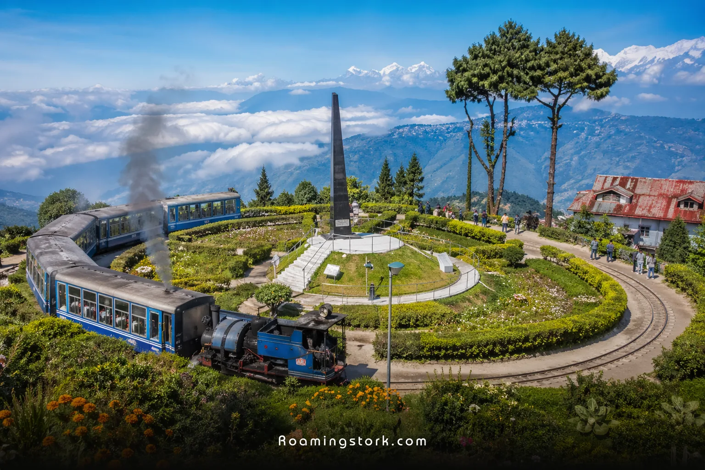
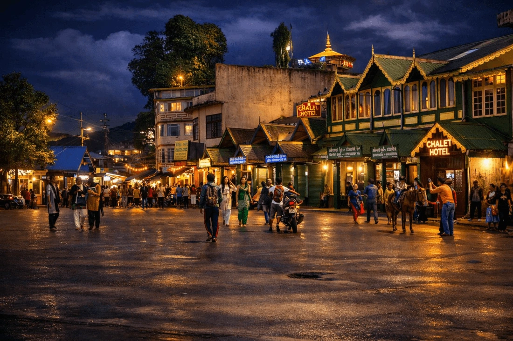
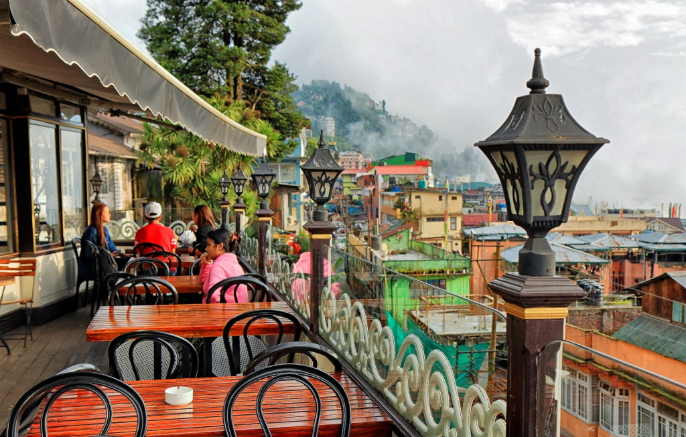
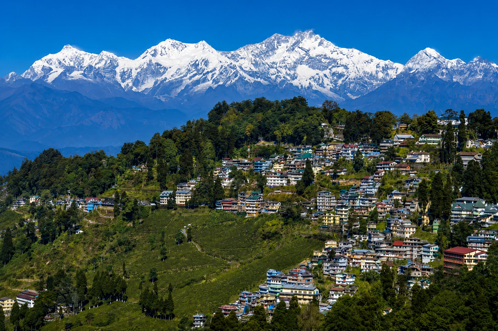
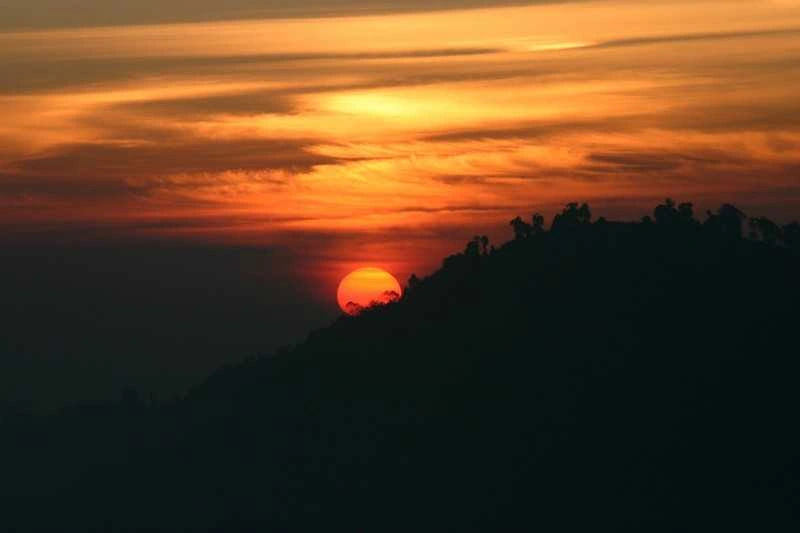
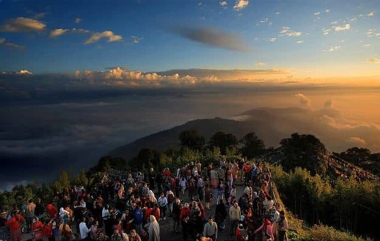

Perched amidst the rolling Himalayan mountains of West Bengal, Darjeeling is one of India’s most iconic hill stations. Famous for its breathtaking sunrise views, tea gardens, toy train rides, colonial charm, and panoramic views of Mount Kanchenjunga, Darjeeling attracts travelers from across the world throughout the year. Surrounded by lush green hills, pine forests, monasteries, and cool mountain weather, Darjeeling offers the perfect blend of nature, culture, history, and relaxation. Whether you are planning a honeymoon, family vacation, backpacking trip, or peaceful mountain getaway, Darjeeling promises unforgettable Himalayan memories.
Why Darjeeling is Famous Among Tourists



The history of Darjeeling dates back to the early 19th century when the British discovered the region’s cool climate and scenic beauty. Originally part of the Kingdom of Sikkim, Darjeeling was later developed by the British as a summer retreat and sanatorium. The British established tea plantations in the region, leading to the worldwide popularity of Darjeeling Tea, often called the “Champagne of Teas.” During the colonial era, several schools, churches, railway lines, and heritage buildings were built, many of which still remain major attractions today. The UNESCO-listed Darjeeling Himalayan Railway, popularly known as the Toy Train, remains one of the greatest engineering marvels of mountain railways in the world.
Tiger Hill is one of the most famous viewpoints in Darjeeling known for its spectacular sunrise over Mount Kanchenjunga. On clear mornings, travelers can witness:


Batasia Loop is a beautifully designed railway loop surrounded by flower gardens and panoramic Himalayan views. The location is famous for:
Darjeeling is world-famous for its tea plantations producing premium-quality tea exported globally. Popular tea garden experiences include:
Darjeeling Peace Pagoda is a peaceful Buddhist monument offering panoramic views of Darjeeling town and surrounding mountains. The pagoda symbolizes peace, spirituality, and harmony.
Chowrasta is the heart of Darjeeling town and a favorite evening hangout spot for tourists. Travelers enjoy:
Ghoom Monastery is one of the oldest Tibetan Buddhist monasteries in the region known for its giant Maitreya Buddha statue and peaceful spiritual atmosphere.
8. Rock Garden & Ganga Maya ParkThese scenic attractions near Darjeeling are famous for waterfalls, landscaped gardens, mountain streams, and peaceful natural surroundings.
Darjeeling is a year-round destination, with every season offering unique beauty.
Tulip blooms and colorful gardens
Pleasant weather
Clear mountain views
Ideal for sightseeing and family vacations
Best season for tea garden visits
Temperature ranges between 10°C to 25°C.
Lush green landscapes
Cloud-covered mountains
Beautiful misty atmosphere
However, heavy rainfall may occasionally affect travel plans.
Crystal-clear Himalayan views
Crystal-clear Himalayan views
Cold mountain weather
Peaceful atmosphere
Occasional snowfall in nearby higher regions
Winter is ideal for photography and honeymoon trips.
Mountain cafés and bakeries are also highly popular among travelers.
Darjeeling is well connected by road from Siliguri, Gangtok, and nearby North Bengal regions.
The nearest major railway station is New Jalpaiguri Railway Station (NJP).
The nearest airport is Bagdogra Airport.
Darjeeling is not just a hill station — it is an experience filled with tea gardens, toy trains, Himalayan sunrises, mountain cafés, colonial charm, and breathtaking landscapes. The combination of peaceful mountain life, vibrant local culture, and spectacular Kanchenjunga views makes Darjeeling one of the most beautiful destinations in India. Whether you are planning a romantic honeymoon, family holiday, solo backpacking journey, photography trip, or peaceful mountain retreat, Darjeeling offers unforgettable memories in the lap of the Himalayas.
Wander and Wonder Travels offers professionally curated Darjeeling tour packages covering Tiger Hill, Batasia Loop, Darjeeling Railway Station, Mirik, Simana, Himalayan Zoological Garden, and beyond.
Why Choose Wander and Wonder Travels?